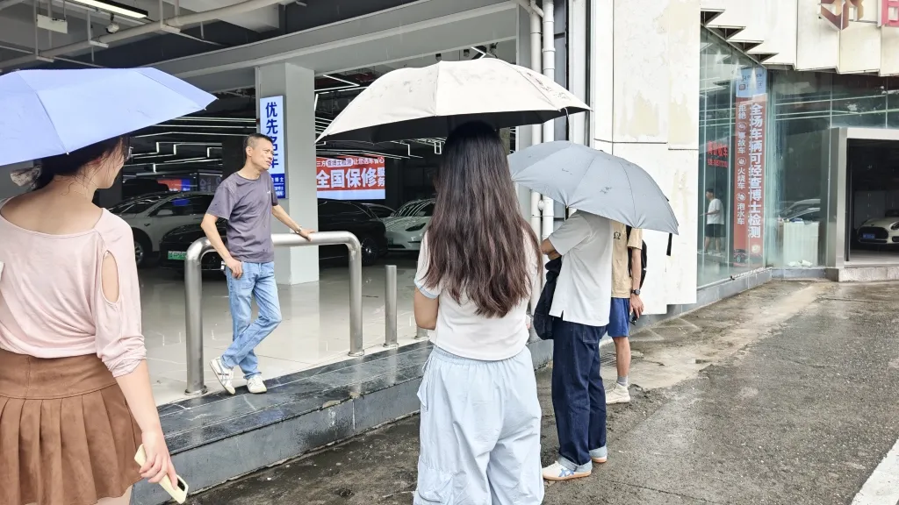
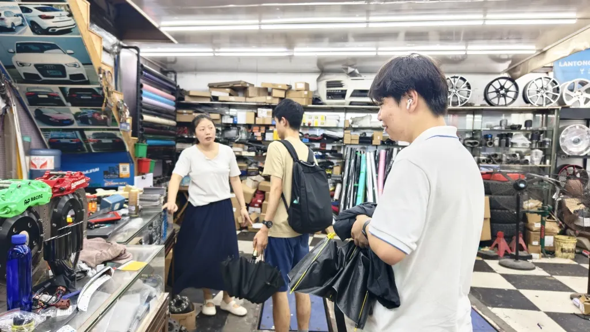
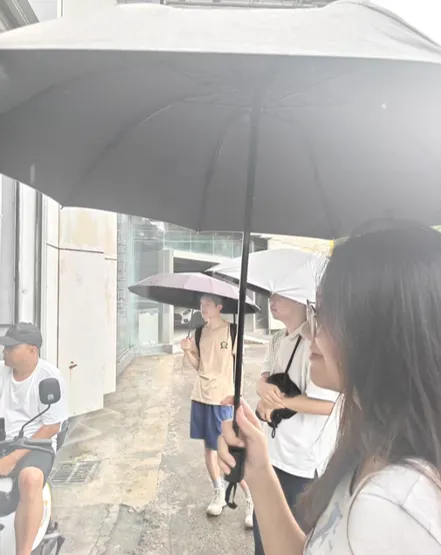
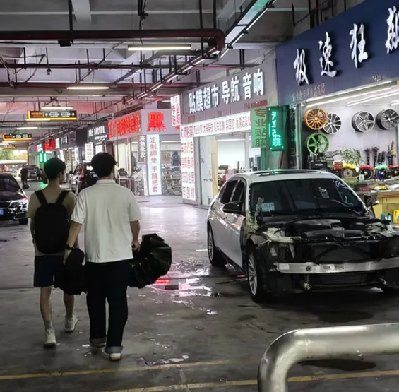
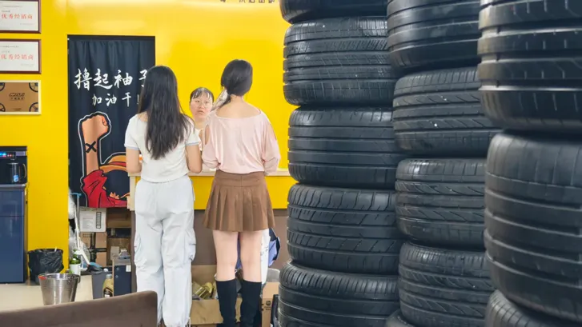
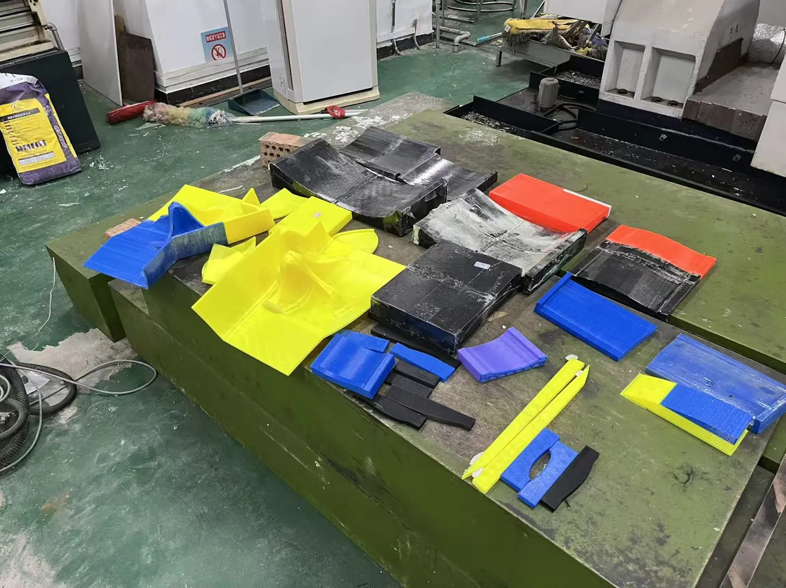
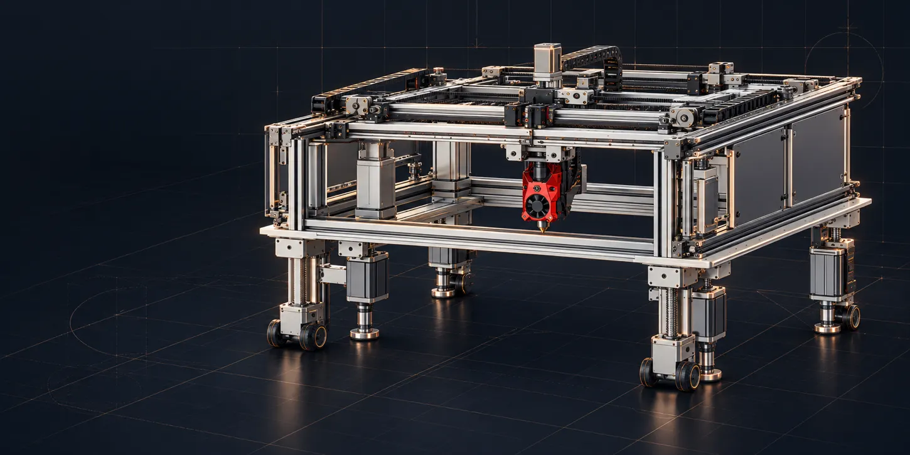

返回运营项目索引
返回运营项目索引移动3D打印机器人
阅读项目文档 ↓移动3D打印机器人
——在汽车后市场的应用【提案】
项目简介
面向汽车后市场的大尺寸、小批量定制需求，项目探索用移动3D打印降低成型空间和开模成本带来的限制。团队已走访杭州汽车城，并向深圳技术大学极光车队了解复杂气动件的制造需求。
核心创新
机器人采用四足三自由度行走机构，结合路径规划扩大打印范围。按数字模型打印可去除的 PLA 底模，经碳纤维铺层、真空封装、加热固化和脱模，省去开制金属模具的环节。
应用前景
短期面向大学生方程式车队提供项目制试制服务，跑通从数字模型到力学测试的流程。中期拓展至区域赛事联盟，通过平台规划排产和订单追踪，验证小批量交付能力。长期择机进入汽车后市场，从内饰嵌板等非结构件切入，迭代喷头与耗材方案，面向改装厂和手板企业探索设备销售、租赁及技术支持。







项目文档
汇报逐页阅读
第 1 页
MOBILE 3D PRINTING ROBOT IN THE AUTOMOTIVE AFTERMARKET
移动3D打印机器人在汽车后市场的应用
组长：张轩瑞
组员：左薛瑞 方子怡
钟妍 王若涵
刘子涵 段茗萱
第一组：什么档次和我作对
MOBILE 3D PRINTING ROBOT
第 2 页
目录
CONTENTS
产品概况
PRODUCT OVERVIEW
01
市场分析
MARKET ANALYSIS
02
INITIAL TESTING
03
未来预期
EXPECTED FUTURE
04
初步验证
MOBILE 3D PRINTING ROBOT
第 3 页
产品概况
PART 01
本项目开发一款可爬行移动的 3D 打印机器人，通过四足 3 自由度行走机构实现全空间灵活移动
PRODUCT OVERVIEW
MOBILE 3D PRINTING ROBOT
MOBILE 3D PRINTING ROBOT
外形小巧
可爬行移动
精准打印
第 4 页
碳纤维免开模快速制造技术
3D打印PLA牺牲模具
碳纤维铺层+真空封装
加热固化+PLA去除
精度0.2mm 成本¥50-500
任意曲面 周期1-3天
生物可降解
层压设计
预浸料/干法
真空袋压
低温80°C固化，或热溶解/机械剥离
成品件
产品概况
市场分析
初步验证
未来预期
打印流程
MOBILE 3D PRINTING ROBOT
第 5 页
场 景
小批量定制（1-50件）
原型验证（3-5天出件）
复杂中空件、赛车/改装、外观覆盖件
快速迭代
优 势
技术性解决低成本大尺寸定制件3D打印问题
特 色
快速原型与小批量定制化场景下的最优解
用精度换速度，耐温换成本，适合气动件或外包围件
大尺寸打印件低成本定制的突破
90%
80%
成本降低90%
周期缩短80%
产品概况
市场分析
初步验证
未来预期
胜任力
大尺寸免开金属模
复杂结构一体化成型
MOBILE 3D PRINTING ROBOT
参考文献
《Carbon Fiber Parts Manufacturing With 3D Printed Molds》
第 6 页
市场分析
PART 02
首次直接面向汽车后市场
MARKET ANALYSIS
MOBILE 3D PRINTING ROBOT
MOBILE 3D PRINTING ROBOT
第 7 页
汽车改造市场具有的政策性支撑
三条红线
美国
一个趋势
欧盟
国内&国际
国内
三条红线+一个趋势
《道路交通安全法》：禁止擅自改变登记结构
《机动车登记规定》：改变外观需申请变更
GB 7258/1589：外部突出物、外廓尺寸限值
标注"Show Use Only"
政策正从一刀切转向量化管理
定位展示件/母模
产品概况
市场分析
初步验证
未来预期
国际
展示件/赛道件统一原则
德国
日本
提示咨询TÜV
提示主动申报
脚踏板符合宽度指标即可合法报备
原厂预留安装孔位，说明企业已考虑合规
政策性的市场分析
MOBILE 3D PRINTING ROBOT
第 8 页
高端车
（法拉利/保时捷）开模费
单个客户无法承担
100–120万元/套的成本
杭州本地无外包围模具厂商
产业集中在常州
跨城沟通慢、物流成本高
600mm+级工业3D打印机
15–40万元
车队/小店买不起
汽车外包围市场
汽车内饰市场
汽车改造市场的社会性政策
产品概况
市场分析
初步验证
未来预期
内饰改装合规裕度大、市场铺开广
竞争高度集中在皮具领域
各种材质/设计风格的嵌板、面板鲜有人涉足
MOBILE 3D PRINTING ROBOT
第 9 页
试点对象：大学生方程式车队
初步验证
PART 03
面向C端提供服务
INITIAL TESTING
MOBILE 3D PRINTING ROBOT
MOBILE 3D PRINTING ROBOT
第 10 页
面向C端提供服务
当前主流采用"线切割泡沫芯+局部3D打印嵌件"的折中方案，车队普遍反馈全3D打印模具一体化成型在精度、效率和结构自由度上更理想
工艺痛点明确
车队规模小（20-50人）、决策链条短、技术沟通直接，便于快速迭代工艺参数和反馈质量问题
协作成本低廉
大学生方程式赛事属于封闭校园竞技活动，不受公路汽车改装法规限制，可自由进行车身结构、空气动力学套件等大幅改动
政策合规优势
车队每年需制造小批量（1-3台套）大尺寸碳纤维单体壳、翼片、扩散器等部件，对复杂曲面结构有刚需
需求真是存在
产品概况
市场分析
初步验证
未来预期
试点对象：大学生方程式车队
MOBILE 3D PRINTING ROBOT
第 11 页
平台设计思路
MOBILE 3D PRINTING ROBOT
产品概况
市场分析
初步验证
未来预期
模型上传
智能排产
车队协作
过程追踪
碳纤方案
售后体系
第 12 页
高毛利、低固定成本的项目制服务模式
团队业务本质为典型高毛利、低固定成本的项目制服务模式：
1.边际利润率约 60%–70%
2.月度固定成本较低（约7,000–15,000元/月），月均6–8单即可实现整体盈亏平衡
3.产能爬坡至80–150件/年后，年毛利可达 17.6–33万元
4.后市场切入后，规模化量产将显著摊薄单件固定成本，利润增速有望超过营收增速
5.核心风险与不确定性： 碳纤铺层、固化等环节目前依赖手工操作，人工成本的波动将直接影响单件利润
产品概况
市场分析
初步验证
未来预期
第 13 页
二次迭代后有充分条件投入市场规模化生产
工艺验证期（当前—1年内）
聚焦2-3支核心合作车队，跑通"数字模型→打印底模→碳纤成型→力学测试"完整闭环
建立关键工艺参数库（固化温度曲线、层压顺序、脱模方案），稳定合格率至90%以上
产能爬坡期（1-2年）
扩大车队覆盖范围至区域赛事联盟，验证小批量复用性
优化打印设备利用率与碳布供应链，降低单件边际成本
后市场切入（政策窗口期）
跟踪国内汽车改装政策松绑动态
基于前期积累的工艺数据与口碑，向前期市场调研中识别的汽车后市场改装店、性能工作室、个性化定制品牌开放接单
初期以非结构性外观件切入，逐步扩展至结构增强件
MOBILE 3D PRINTING ROBOT
规模化与
后市场拓展路径
产品概况
市场分析
初步验证
未来预期
第 14 页
未来预期
PART 04
EXPECTED FUTURE
MOBILE 3D PRINTING ROBOT
MOBILE 3D PRINTING ROBOT
第 15 页
产品的二次迭代优化方向
产品概况
市场分析
初步验证
未来预期
市场错位定位
拓竹 ：桌面级打印，熔融沉积耗材前沿
巨影：熔融沉积+光固化，面向类似的大尺寸打印市场，但成本都较高
本项目：熔融沉积基础上革新打印机框架，实现低成本大尺寸打印
优化方向
高性能耗材与喷头引入（材料可选范围拓展）——借鉴拓竹材料科学技术实现喷头与耗材升级
平台化与开源生态整合（产品供给成本控制）——将移动打印平台与配套算法作为核心卖点，喷头支持用户按照生产习惯自配
MOBILE 3D PRINTING ROBOT
二次迭代
第 16 页
产品二次迭代后有望向B端市场发展
核心痛点
产品价值
目标客户
合作模式
面向B端提供产品
（改装厂、手板商）
开模成本高，前期投入大
小批量订单利润低
定制需求多，交付周期长
库存压力与设计迭代成本高
无需开模，降低试错成本
支持单件或小批量定制生产
缩短产品开发与交付周期
支持企业在购买平台、算法之后自配喷嘴、耗材，零成本融入原有产业链
汽车改装厂
汽车内饰定制工作室
手板/模型制作公司
小批量定制加工企业
设备销售
设备租赁
售后维护与技术支持
商业优势
帮助客户拓展个性化定制业务
改造生产线提高生产柔性和响应速度
降低固定资产投入
增强差异化竞争力
产品概况
市场分析
初步验证
未来预期
MOBILE 3D PRINTING ROBOT
第 17 页
MOBILE 3D PRINTING ROBOT
THANKS FOR WATCHING
感谢观看
组长：张轩瑞
组员：左薛瑞 方子怡
钟妍 王若涵
刘子涵 段茗萱
第一组：什么档次和我作对
团队项目说明
第 1 步 先把项目和这次视频认清楚
01 项目叫什么 现在做到哪一步
项目正式名称 / 简称：移动3D打印机器人
本次资料版本/ 日期：2026年11月11日
当前阶段及已完成范围：提案
02 这支视频在哪里 怎样被观看
观看场合（展览 / 路演 / 教学 / 其他）：可视情况用于学习成果展
现场能否放音 、需要哪种语言：【看情况均可】
硬性时长上限；没有则写“按内容确定 ”：【按内容确定】
需要交付的版本及日期：【无特别要求】
开场 片名《移动3D打印机器人在汽车后市场的应用》，下方标注“项目提案”。用图1呈现四足行走机构。
技术方案 用图1、图2说明移动与打印，用图3讲清“打印 PLA 底模 → 碳纤维铺层和真空封装 → 固化去模”。
调研与应用 先用图4交代汽配城走访，再用图5说明方程式车队的复杂件需求。图5字幕写“极光车队既有样件”。
第 2 步 让制作方知道讲给谁 讲完留下什么
03 主要观众是谁 他们最想知道什么
主要观众（具体到身份）：【首次接触项目的成果展观众】
他们已经知道什么：【通过介绍初步了解移动3D打印机器人的技术概念】
他们最关心的问题 1：【商业化的总体想法和路线】
他们最关心的问题2：【为什么选择这个方向，初步怎么实现起步/怎么看待不同阶段的制约条件】
还需兼顾的其他观众：【对技术实现和市场分析/竞品定位感兴趣的广泛观众】
04 看完后 必须记住哪三件事
固定式打印机的成型空间有限，传统开模也难在小批量订单中摊薄成本。
方案用四足三自由度机构移动打印，以 PLA 牺牲底模配合碳纤维成型。
先面向大学生方程式车队提供项目制服务，再考虑汽车后市场和企业设备业务。
第 3 步 先用平实语言说清项目 再列全用户
05 怎样用一句话介绍这个项目
移动3D打印机器人拟通过四足爬行扩大作业范围，为车队和汽车后市场客户制造复杂大件的 PLA 底模和碳纤维试样。
06 本片必须讲到哪些产品使用者
主要使用者为大学生方程式车队，场景是翼片、扩散器等气动件的试制和迭代。
后续面向改装厂、内饰定制工作室、手板公司和小批量加工企业，场景是个性化面板、模型及非结构件的小批量制造。
第 4 步 跟着填一张完整用户逻辑卡
07 这个用户原来怎么做 具体卡在哪
车队气动件。深圳技术大学极光车队介绍，除单体壳委外加工外，其他大尺寸件多用线切割泡沫制作。遇到泡沫难以加工的复杂结构，再用3D打印补做局部。车队自有设备的成型空间有限，大尺寸复杂件仍需要在泡沫加工、局部打印和委外之间选择。
汽车内饰。杭州汽车城走访中，团队观察到内饰改装供给主要集中在皮具，个性化面板和嵌板的款式相对有限。传统开模的前期投入又难在单件和小批量订单里摊薄。
旁白 “我们在走访中发现，车队做大尺寸气动件时，往往要把泡沫加工和局部3D打印结合起来。到了汽车内饰市场，个性化嵌板又面临另一个问题：款式少，小批量开模的成本难分摊。”
画面 先用图5展示极光车队既有样件，叠加“泡沫线切割＋局部3D打印”字幕。转到图4杭州汽车城实拍，字幕切为“小批量内饰嵌板定制”。
08 项目怎样帮助他 最后得到什么
车队试制方案。以翼片等气动件为例，先按数字模型打印 PLA 牺牲底模，再铺放碳纤维、真空封装、固化并去除底模。四足行走机构用于扩大打印作业范围。试制阶段拟通过尺寸检查和力学测试评价成型件。
内饰定制方案。按面板或嵌板形状建模，用同一套底模和碳纤维成型流程尝试个性化制作。提案以非结构性外观件作为后市场切入方向。
旁白 “方案先把数字模型打印成临时底模，再在底模上铺碳纤维，真空封装并固化。去掉底模后，就能对成型件做尺寸和力学检查。这条工艺路线先在车队场景验证，也可探索内饰嵌板定制。”
画面 用图1和图2分别说明行走机构与打印机构，再用图3逐步高亮“打印底模”“铺层与真空封装”“固化去模”。图5用于说明车队已有加工场景。
第 5 步 解释差异 也保留做事过程
09 与原有做法相比 究竟改变了什么
成型范围。固定式设备受机身尺寸限制。最终汇报将拓竹作为桌面打印和耗材生态的参照，将巨影作为大尺寸设备的参照。本方案采用移动行走机构与打印框架组合，目标是扩大作业范围。
小批量工艺。按件打印 PLA 牺牲底模，再做碳纤维铺层和固化，减少为小批量订单预先开发传统金属模的投入。铺层和固化仍是项目制服务中的人工成本环节。
10 团队做过什么 又为什么调整
团队先查阅设备和耗材资料，随后在杭州汽车城观察外包围件和内饰市场，并向极光车队了解气动套件的制作方式。
两次调研回答了不同问题。汽配城走访显示，传统开模和大设备投入会影响小批量定制，内饰嵌板存在可探索的产品方向。车队问询给出了具体工艺场景，因而最终汇报把车队列为早期验证对象，把更广泛的汽车后市场放在后续。
第 6 步 项目阶段和数据
11 哪些成果已经完成 哪些还在计划中
项目处于提案阶段。已有汽配城走访、车队问询、四足结构与打印工艺方案、平台设计和商业测算。下一步设想是用车队场景做工艺验证。
12 每个重要数字从哪里来 代表什么
四足三自由度是行走机构的设计描述，配图见第17题图1。
第 7 步 商业模式
13 谁付费 买到什么 价格怎么算
早期按项目提供服务。车队按气动件或其他试制件的需求购买底模加工或碳纤维加工服务。加工成本来自底模、耗材、铺层和固化人工。铺层及固化目前在提案中按人工操作考虑，工时变化会影响单件成本。
平台设计服务于订单流程。客户上传模型，方案拟据此安排生产、与车队协作、跟踪加工过程，并衔接碳纤维加工和售后。原稿将这些环节归纳为模型上传、智能排产、车队协作、过程追踪、碳纤方案和售后体系。
后续面向企业提供设备。二次迭代后，拟向汽车改装厂、内饰定制工作室、手板公司和小批量加工企业提供设备销售或租赁，并配套维护和技术支持。
旁白 “早期先按项目为车队提供底模和碳纤维加工服务。平台的设想是把模型、排产和加工进度连起来。待设备迭代后，再面向有小批量定制需求的企业提供销售、租赁和技术支持。”
画面 用文字卡呈现“模型上传 → 排产与车队协作 → 过程追踪 → 碳纤加工与售后”。随后切换“设备销售｜设备租赁｜维护和技术支持”。
14 用户从哪里来 为什么持续使用
早期从大学生方程式车队切入，围绕车队的模型迭代、赛前备件和小批量加工需求展开。工艺稳定后，路线规划扩展到区域赛事联盟，再面向改装店、性能工作室和个性化定制品牌。
第 8 步 后续规划和汇报内容
15 下一阶段先做什么 如何判断完成
工艺验证。先从大学生方程式车队的复杂气动件入手，验证数字模型、打印底模、铺层固化、去模和力学测试的完整流程。记录固化温度曲线、铺层顺序和去模方法，观察工艺能否在不同件上复用。
产能爬坡。在工艺可复用后，提案拟把服务扩大到区域赛事联盟。通过小批量加工观察质量一致性，同时优化设备利用率和碳布供应。
后市场切入。优先探索非结构性外观件和内饰嵌板。设备迭代关注高性能耗材、喷头适配、用户自配喷头及开源生态，逐步拓展改装厂等企业客户。
旁白 “第一步是在车队场景验证整套工艺。工艺能重复应用后，再扩大车队服务范围。后续从非结构性外观件和内饰定制切入汽车后市场，并迭代设备和材料方案。”
画面 做三段路线条“车队工艺验证 → 扩大车队服务 → 汽车后市场”。第一段配图3和图5，后市场段用图4衔接。企业设备业务用文字呈现。
16 原稿哪些内容必须讲 哪些可以省略
产品方案（图1–3）｜四足三自由度结构，PLA 底模、碳纤铺层、真空封装、固化与去模，小批量复杂件应用。
市场调研（图4）｜传统开模成本、大型设备投入与内饰嵌板定制需求。
车队场景（图5）｜方程式车队的加工痛点和早期试点思路，配极光车队的走访问询。
平台设想｜模型上传、智能排产、车队协作、过程追踪、碳纤方案和售后体系。
项目制服务｜项目制服务、人工成本因素、工艺验证、产能爬坡和后市场切入。
后续方向｜拓竹和巨影的市场定位、耗材与喷头升级、平台化及开源生态、B 端客户与合作方式。
第 9 步 画面和素材
17 哪些图文最能让人认出这个项目
下列图片已嵌入本文，供制作时直接查看。
图1 四足行走机构示意（Canva 第3页）
图2 打印机构图（Canva 第11页）
图3 PLA 底模、碳纤维铺层与固化去模流程（Canva 第4页）
图4 杭州汽车城走访（团队实拍）
图5 极光车队既有样件（实地调研）
18 希望是什么观感 参考里具体喜欢什么
用四足结构图说明移动打印，用流程箭头呈现从底模到碳纤维件的步骤，市场部分穿插走访实拍。
第 10 步 片尾和参考资料
19 结尾要留下什么 哪些词必须读对
PLA 可逐字母读，首次出现配字幕“PLA 牺牲底模”。
20 参考资料
本片选用的结构图、工艺图和调研照片均在第17题。其余参照给出的参考压缩包内容。
文字与画面的出处为最终汇报《移动3D打印机器人在汽车后市场的应用》和团队实地调研。